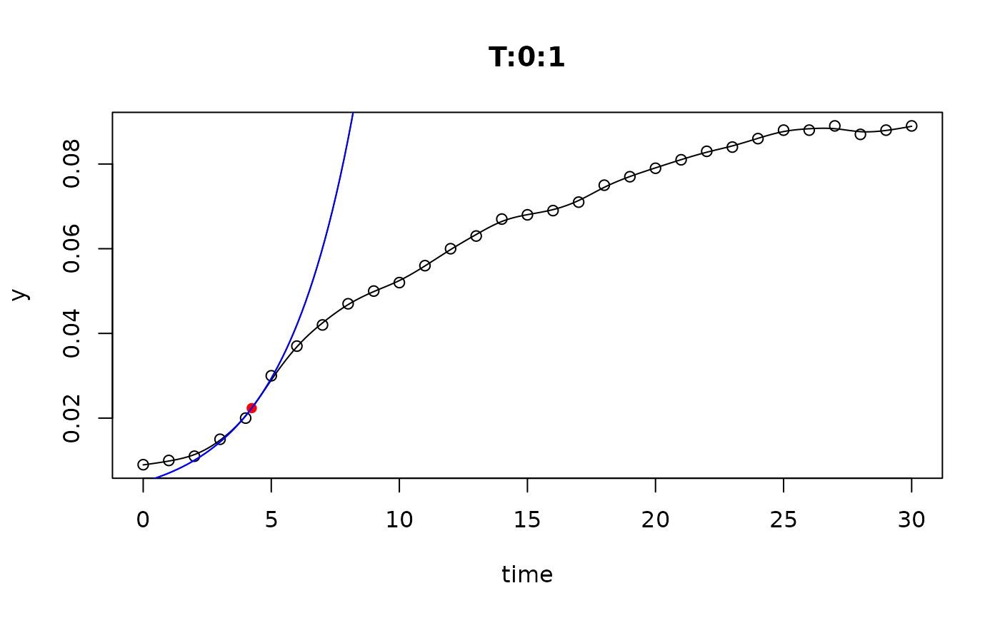
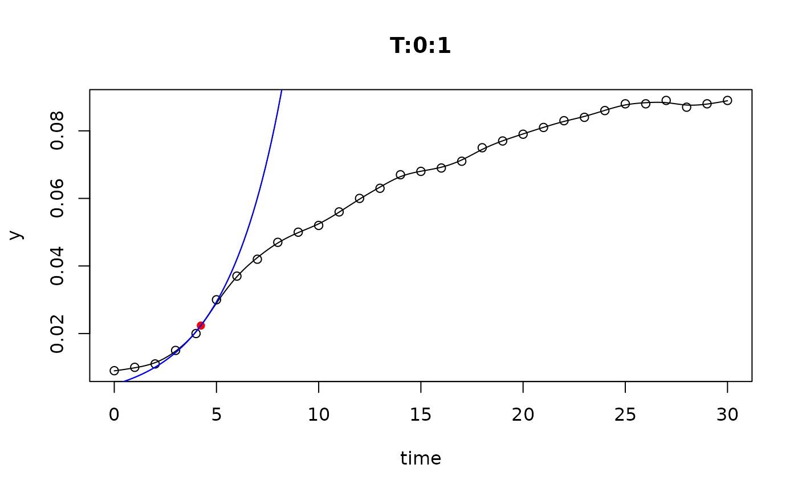

Operators to access parts of 'multiple_fits' objects
Usage
# S4 method for class 'multiple_fits,ANY,missing'
x[i, j, ..., drop = TRUE]
# S4 method for class 'multiple_fits,ANY,missing'
x[[i, j, ...]]Examples
data(bactgrowth)
L <- all_splines(value ~ time | strain + conc +replicate, data=bactgrowth)
coef(L[[1]])
#> y0 mumax
#> 0.008092251 0.298829008
plot(L[["R:0:2"]])
# par(mfrow=c(2, 2))
plot(L[1:4])
 
